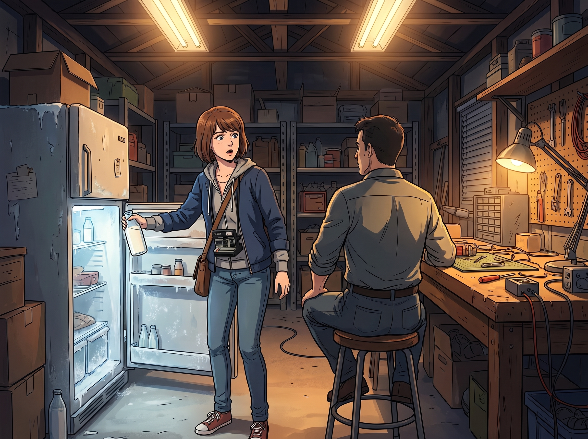
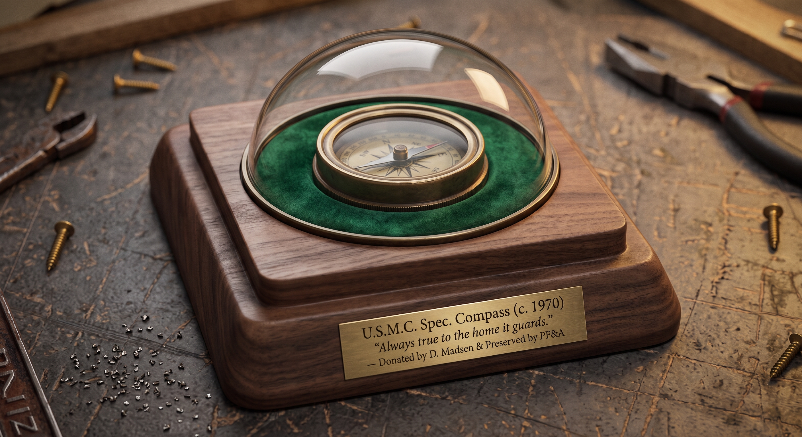

指南針


對 David 來說，接受兩個女孩之間超越生死的感情，是一場劇烈的內部拉鋸戰。作為一個受過嚴格軍事訓練、思想極其傳統的退伍軍人，他的世界觀原本高度單元化——但他不是個冷血無情的人，更不是個盲目的頑固份子。
在經歷了這幾天的觀察、以及深夜與 Joyce 在床頭的長談後，David 心裡那套極其硬核的「戰術評估體系」，早已悄悄給出了結論。
「改變 Chloe 的不是我，也不是軍校教條，」他在深夜對 Joyce 坦白，聲音沙啞，「是 Maxine。她是 Chloe 的錨。」
一、車庫深夜的核准儀式
週日深夜，車庫的燈還亮著。
Max 準備去舊冰櫃拿一瓶冰鎮牛奶，剛推開門，就看到 David 正背對著門，坐在重型工具台前。
「坐下。」David 拍了拍身邊那張乾淨的木凳，語氣聽不出喜怒，但少了平時的嚴厲。
車庫裡只剩下復古收音機裡微弱的鄉村音樂，以及機油與皮革的味道。
David 默不作聲地從小抽屜裡拿出一個沉甸甸的漆木盒子，打開，裡面是一支 1970 年代美軍特種部隊定製的古董黃銅高精度機械指南針，外殼磨得泛出溫潤的暗光。
「這是我在海軍陸戰隊服役時，我的上級傳給我的，」David 的指尖撫過黃銅外殼，聲音沉重，「在沒有 GPS、沒有信號、四周全是迷霧和敵火的地方……這玩意兒指引我活著回到了家。」
他突然轉過身，那雙經歷過風霜的眼睛直視著 Max：「我思想保守，Maxine。有些現代人的新鮮詞彙，我這輩子可能都搞不懂，我也不打算懂。」
Max 的心一下子提到了嗓子眼。
「但是，」David 斷然打斷了她的緊張，將那個沉甸甸的黃銅指南針推到了 Max 手邊，「我是一名士兵，我只相信事實與行動。我看到 Chloe 現在眼睛裡有光，我看到她懂得了責任，我看到她每天晚上睡得很香——這一切，是因為妳在她身邊。」
David 伸出那隻佈滿老繭的大手，重重地按在了 Max 的肩膀上：
「拿著它。以後如果這隻藍毛丫頭敢欺負妳、或者又犯混想衝進危險裡……用這東西狠狠敲她的頭，然後把她帶回家。聽懂了嗎，Caulfield 長官？！」
二、告別時的笨拙認可
離別的週一清晨，老雪佛蘭皮卡的後斗裡，被 David 暗中裝滿了兩大桶最高規格的重型車床冷卻液、一整套保養極佳的古董鋼銼，以及 Joyce 準備的幾大盒密封好的烤牛肉與藍莓派。
David 走到副駕駛門邊，給正在檢查相機的 Max 遞過去一個沉甸甸的黑色戰術防水包：「裡面是特種車輛急救包和最高等級的耐候防腐漆，給你們東區那節火車車廂準備的。別讓生鏽侵蝕了結構承重。」
隨後，他轉身走向 Chloe，像軍人交接重任一樣，用力拍了拍她的肩膀，指了指副駕駛上的 Max：「開車慢點，Price。保護好妳的乘客，就像保護妳自己的命一樣。」
Chloe 愣了一下，看著繼父眼神裡那份不再掩飾的信任與託付，眼底的叛逆徹底消融。她咧開嘴，高高舉起右手，破天荒地對著 David 敬了一個雖然極不標準、卻無比認真的軍禮：「遵命，麥德森老頭！保證完成任務！」
三、工坊裡的新家
回到波特蘭後，Max 將黃銅指南針珍重地安置進工坊那張老橡木「物質記憶展櫃」的天鵝絨底墊上，一旁立著一張她親手沖洗的黑白照片——阿卡迪亞灣的懸崖長椅、白色燈塔的光芒，以及老兵粗糙大手按在肩膀上的定格。
那天傍晚，四人照例聚在天台喝茶。Victoria 端詳著指南針的照片，難得評價了一句：「以軍規標準來說，那是足以在極端環境下定位生死的東西。」隨後她看向緊扣在一起的兩隻手，語氣裡帶著一絲罕見的認真：「至少他明白了一件事——在妳們這段失控的冒險裡，確實需要一個能把對方從懸崖邊拉回來的精準指針。」
「那是當然，」Chloe 順勢摟住 Max 的肩膀，「考菲爾德長官就是老娘的專屬指針，就算全宇宙的磁極倒轉，她指的方向就是我家。」
皮卡的塵土雖已洗去，但那份沉甸甸的、跨越了保守與偏見的認可，永遠留在了工坊展櫃裡，也留在了兩人心底。